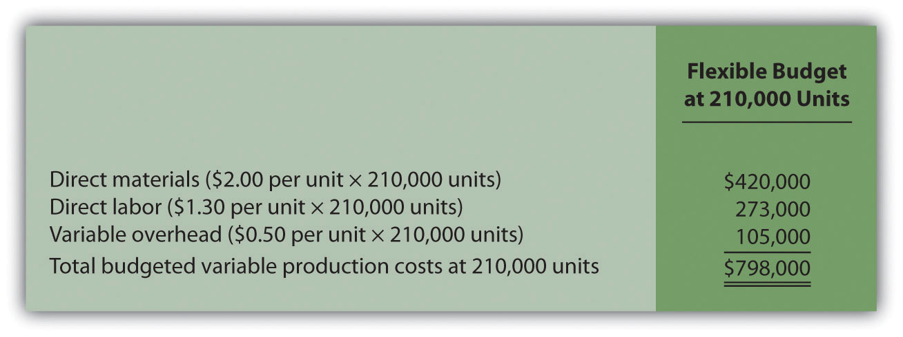
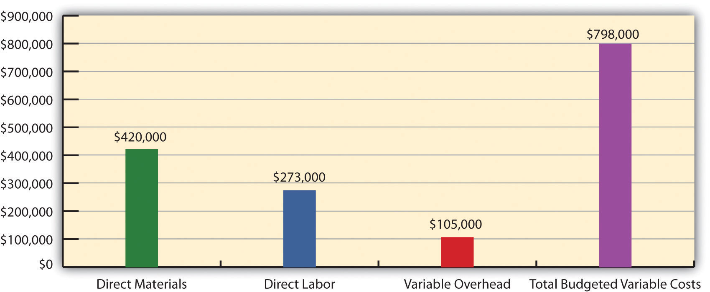

Question: Companies often use standard costs for planning and control purposes. What are standard costs?
Answer: Standard costsCosts that management expects to incur to provide a good or service and are typically stated as a cost per unit. Standard cost is based on the combination of a price (or rate) standard and quantity (or hours) standard. are costs that management expects to incur to provide a good or service. They serve as the “standard” by which performance will be evaluated. For example, fast-food restaurants have a standard for the length of time it should take to serve a drive-through-window customer. Phone directory operators have a standard length of time it should take to provide a phone number to a customer. Manufacturing companies have a standard quantity of direct materials to be used to produce one unit of product.
Question: What is the difference between standard costs and budgeted costs?
Answer: The term standard cost refers to a specific cost per unit. Budgeted cost refers to costs in total given a certain level of activity. Standard variable production costs at Jerry’s Ice Cream are shown in Figure 10.1 "Standard Costs at Jerry’s Ice Cream".
Figure 10.1 Standard Costs at Jerry’s Ice Cream
*Direct materials standards come from the direct materials purchases budget presented in Chapter 9 "How Are Operating Budgets Created?".
**Direct labor standards come from the direct labor budget presented in Chapter 9 "How Are Operating Budgets Created?".
† Variable overhead costs are applied to products based on direct labor hours. Variable overhead cost per direct labor hour is calculated by dividing total variable overhead costs of $100,200 (from the manufacturing overhead budget in Chapter 9 "How Are Operating Budgets Created?") by 20,040 total direct labor hours (from the direct labor budget in Chapter 9 "How Are Operating Budgets Created?"), which results in a standard variable overhead rate of $5 per direct labor hour.
These standard costs can then be used to establish a flexible budget based on a given level of activity. For example, let’s use Jerry’s actual sales of 210,000 units. The variable production costs expected to produce these units are shown in the flexible budget in Figure 10.2 "Flexible Budget for Variable Production Costs at Jerry’s Ice Cream".
Figure 10.2 Flexible Budget for Variable Production Costs at Jerry’s Ice Cream
The standard cost presented in Figure 10.1 "Standard Costs at Jerry’s Ice Cream" shows the variable production costs expected to produce one unit. The flexible budget in Figure 10.2 "Flexible Budget for Variable Production Costs at Jerry’s Ice Cream" uses the standard cost information to show the variable production costs expected in total given a certain level of activity (210,000 units in this example). Later in the chapter, we compare the flexible budget presented in Figure 10.3 "Flexible Budget" to actual results and analyze the difference. The flexible budget graph presented in Figure 10.3 "Flexible Budget" shows that direct materials have the highest variable production cost at $420,000, followed by direct labor at $273,000 and variable overhead at $105,000.
Figure 10.3 Flexible Budget
Question: What are the components needed to establish a standard cost for direct materials, direct labor, and variable manufacturing overhead?
Answer: Notice in Figure 10.1 "Standard Costs at Jerry’s Ice Cream" that direct materials has two separate standards necessary to calculate the standard cost: standard quantity to produce 1 unit of product (2 pounds) and standard price ($1 per pound). Direct labor has two separate standards as well: standard hours to produce 1 unit of product (0.10 hours) and standard rate ($13 per hour). Variable manufacturing overhead also has 2 separate standards: standard hours to produce 1 unit of product (0.10 direct labor hours) and standard rate ($5 per hour). Thus there are two separate standards necessary to establish each standard cost or six standards in total to establish a standard cost for direct materials, direct labor, and variable manufacturing overhead.
As we explain next, there are many approaches to establishing these six standards for direct materials, direct labor, and variable manufacturing overhead (we discuss fixed manufacturing overhead at the end of this chapter).
Question: How do organizations determine the standard quantity and standard price for direct materials?
Answer: The standard quantity for direct materialsThe quantity of materials required to complete one good unit of product. represents the materials required to complete one good unit of product (i.e., a product with no defects), and it includes an allowance for waste and spoilage. For Jerry’s Ice Cream, the standard quantity of materials needed for each gallon of product is given in the recipe. Jerry’s adds a certain amount to the recipe quantity for waste and spoilage. Similar to this approach, companies might find the standard quantity in the product specifications outlined by product engineers. Some companies review historical production information to determine quantities used in the past and use this information to set standard quantities for the future.
The standard priceThe final delivered cost of materials per unit of measure (e.g., measured in yards or pounds). for direct materials represents the final delivered cost of the materials and includes items such as shipping and insurance. The standard price for materials at Jerry’s comes from the purchase contract negotiated with the company’s supplier. As an alternative to this approach, companies might use historical data or look at price trends in the marketplace.
As shown in Figure 10.1 "Standard Costs at Jerry’s Ice Cream", for Jerry’s Ice Cream, the standard quantity of direct materials is 2 pounds per unit, and the standard price is $1 per pound. Thus the standard cost per unit for direct materials is $2, calculated as follows:
$2 standard cost per unit = 2 pounds per unit × $1 per poundQuestion: How do organizations determine the standard hours and standard rate for direct labor?
Answer: The standard hoursThe direct labor time required to complete one good unit of product. for direct labor represents the direct labor time required to complete one good unit of product and includes an allowance for breaks and production inefficiencies such as machine downtime. Jerry’s Ice Cream established this standard using historical information. In addition to this approach, companies might use time and motion studies performed by engineers who observe production workers and analyze the time required to perform production activities.
The standard rate for direct laborThe average cost of wages and benefits for each hour of direct labor work performed. represents the average cost of wages and benefits for each hour of direct labor work performed. Jerry’s Ice Cream looked at past payroll records to determine this standard. Companies also review labor contracts to estimate the costs associated with direct labor.
As shown in Figure 10.1 "Standard Costs at Jerry’s Ice Cream", for Jerry’s Ice Cream, the standard hours for direct labor is 0.10, and the standard rate is $13 per hour. Thus the standard cost per unit for direct labor is $1.30, calculated as follows:
$1.30 standard cost per unit = 0.10 direct labor hours per unit × $13 per hourQuestion: How do organizations determine the standard quantity and standard rate for variable manufacturing overhead?
Answer: The standard quantity for variable manufacturing overheadThe time, typically measured in direct labor hours or machine hours depending on the allocation base, required to complete one good unit of product. represents the time required to complete one unit of product. This time is often measured in direct labor hours or machine hours, depending on how the company chooses to allocate overhead (recall that we covered the choice of allocation base at length in Chapter 2 "How Is Job Costing Used to Track Production Costs?"). Jerry’s Ice Cream uses direct labor hours to allocate variable manufacturing overhead, so we apply the same standard quantity used for direct labor.
The standard rate for variable manufacturing overheadThe variable portion of the predetermined overhead rate used to allocate overhead cost to products. represents the variable portion of the predetermined overhead rate used to allocate overhead costs to products (see Chapter 2 "How Is Job Costing Used to Track Production Costs?" for further discussion of predetermined overhead rates).
As shown in Figure 10.1 "Standard Costs at Jerry’s Ice Cream", for Jerry’s Ice Cream, the standard quantity of direct labor hours is 0.10, and the standard rate (predetermined overhead rate) is $5 per direct labor hour. Thus the standard cost per unit for variable manufacturing overhead is $0.50, calculated as follows:
$0.50 standard cost per unit = 0.10 direct labor hours per unit × $5 per hourQuestion: In the process of establishing standards, managers must decide between using ideal standards or attainable standards. What is the difference between these two standards?
Answer: Ideal standardsStandards set assuming production conditions are perfect with no inefficiencies. are set assuming production conditions are perfect. For example, ideal standards assume machines never break down, employees are never ill, and materials are never wasted. Although ideal standards may provide motivation for workers to strive for excellence, these standards can also have a negative impact because they may be impossible to achieve.
As an alternative to ideal standards, most managers use attainable standards. Attainable standardsStandards that are more realistic than ideal standards by taking into consideration the likelihood of encountering problems in production such as machine downtime, materials waste, and employee illness. take into consideration the likelihood of encountering problems in production such as machine downtime, electricity outages, materials waste, and employee illnesses. Most managers feel attainable standards have a positive behavioral impact on workers because the standards are reasonable and attainable under normal production conditions. We assume the use of attainable standards throughout this chapter.
Question: How are standards used to control operations?
Answer: Companies typically use standards to analyze the difference between budgeted costs and actual costs. The process of analyzing differences between standard costs and actual costs is called variance analysisUsing standards to analyze the difference between budgeted costs and actual costs.. Managerial accountants perform variance analysis for costs including direct materials, direct labor, and manufacturing overhead.
Standard costs are also used to determine product costs. Companies using standard costing systems are able to estimate product costs without having to wait for actual product cost data, and they often record transactions using standard cost information. The appendix shows how this process works using journal entries.
Source: Photo courtesy of Keith Allison, http://www.flickr.com/photos/keithallison/2310444991/.
Controlling Costs in the NBA
The National Basketball Association (NBA) imposes a “salary cap” that dictates a maximum dollar amount each team can pay its players collectively in one season. The salary cap is based on a percentage of basketball-related income and was set at $57,700,000 per team for the 2009–10 season. This serves as the cost budget for player payroll. However, “salary exceptions” allow many teams to exceed the salary cap.
Annual salaries for some of the highest paid players for the 2009–10 season are shown as follows:
Imagine being the manager of the Boston Celtics and having to pay one player almost half of your entire budget! Clearly, controlling costs in this type of business environment is a challenge, and budgeting is a crucial element in achieving financial success.
Source: InsideHoops.com, “Home Page,” http://www.insidehoops.com.
Recall from the review problems in Chapter 9 "How Are Operating Budgets Created?" that Carol’s Cookies produces cookies for resale at grocery stores throughout North America. We established a master budget indicating Carol expects to use 1.5 pounds of direct materials for each unit produced at a cost of $2 per pound (1 unit = 1 batch of cookies). Each unit produced will require 0.20 direct labor hours at a cost of $12 per hour. Variable manufacturing overhead is applied based on direct labor hours at a rate of $3.50 per hour. Last year’s sales were expected to total 400,000 units.
Carol just received last year’s actual results showing sales of 390,000 units.
Solution to Review Problem 10.2